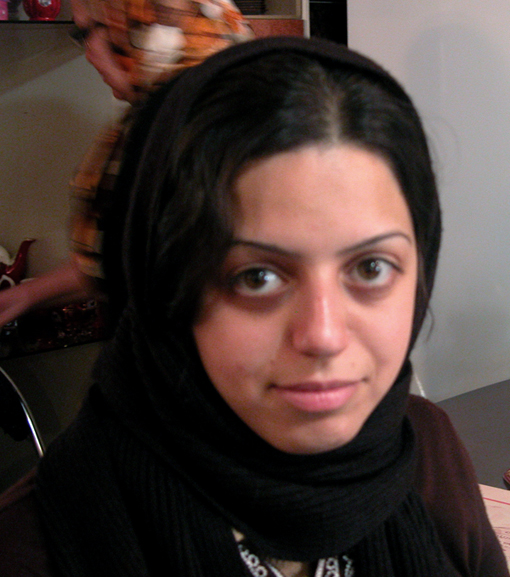
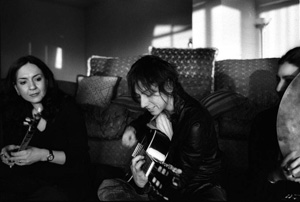
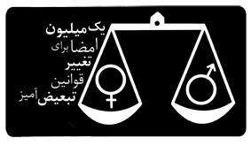
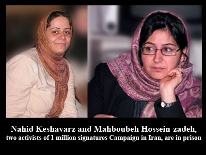
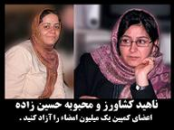
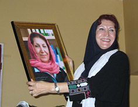
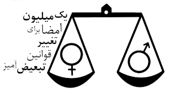

|
|
News
Latest update – Monday 17 March 2014.
Articles in this section
- 15 May 2007

- 5 May 2007
Reporters Sans Frontier Issues Statement In Support of Women’s Rights Activists
- 5 May 2007

WLP Issues Statement In Support of Iranian Women’s Rights Activists
- 2 May 2007

- 28 April 2007

- 28 April 2007

- 28 April 2007
- 27 April 2007
- 27 April 2007

- 25 April 2007

- 18 April 2007

- 18 April 2007

- 13 April 2007

UPDATE ON THE CONDITION OF IMPRISONED MEMBERS OF THE CAMPAIGN
- 13 April 2007
New Strategies for Harassment and Intimidation of Women’s Rights Defenders
- 10 April 2007
- 7 April 2007
- 5 April 2007

Update on Imprisoned Women’s Human Rights Defenders
- 5 April 2007
- 23 February 2007
- 21 February 2007

- 20 February 2007
- 20 February 2007
Women’s Learning Partnership
- 20 February 2007
By MAURA J. CASEY
The New York Times
- 20 February 2007
- 20 February 2007

Shahrzadnews
- 20 February 2007
Nazanin Afshin-Jam
- 20 February 2007
site of Nobel Women’s Initiative
- 20 February 2007

Syma Sayyah
Payvand’s Iran News
- 20 February 2007
- 20 February 2007

|